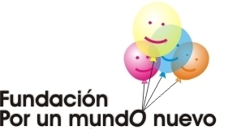

Grupo de Investigación Interdisciplinar “Perspectiva psicojurídica del conflicto, la violencia y otras interacciones humanas”
Kankei
Avalado por
Semillero
Sin el entusiasmo, creatividad, compañía y compromiso de los estudiantes, es muy difícil que los grupos de investigación se sostengan por años, especialmente cuando tales equipos, deben desarrollarse aún a costa de las dificultades propias de la investigación en Latinoamérica.
Los profesionales del Grupo de Investigación Interdisciplinar “Perspectiva psicojurídica del conflicto, la violencia y otras interacciones humanas” Kankei, reconocemos esa “energía extra” y esa “participación inquieta” propia de los estudiantes comprometidos. Por esto, desde su creación, el grupo Kankei ha insistido en la necesidad de contar con un semillero y/o apoyar el desarrollo de semilleros estudiantiles de investigación.
Debido a los intereses metodológicos, estadísticos e investigativos del actual Líder del Kankei, se dio inicio en 2007 a un grupo que reunía estudiantes de psicología, derecho y filosofía, quienes adelantaban sus tesis de pregrado y deseaban fortalecer sus competencias para cumplir con este requisito de grado; las reuniones se hacían quincenalmente y se aprovechaban para exponer adelantos, realizar aclaraciones metodológicas y generar nuevas ideas de investigación.
Este primer semillero se fue consolidando con los aportes de los más de treinta estudiantes de pregrado que hicieron parte activa de los grupos de discusión durante dos años y medio; para el segundo semestre de 2009 se integraron los primeros estudiantes de posgrado en psicología, derecho y politología. Por esa época, había un encuentro cada mes. En los tres años siguientes, el semillero se fortaleció con la asistencia de estudiantes de pregrado y postgrado, especialmente interesados en temas psicojurídicos y provenientes de las universidades Santo Tomás, Católica y Javeriana.
En 2013, como parte del proyecto de creación y desarrollo del Área de Psicología Jurídica del Programa de Psicología de la Corporación Universitaria Minuto de Dios, el doctor Jorge Erwin Camacho Galindo propuso la creación de un Grupo de Discusión en Psicología Jurídica y Ciencias Forenses, del cual fue director en sus dos primeros años. Desde ese mismo año, ese grupo de entusiastas jóvenes han contado con el apoyo desinteresado de Kankei, la Fundación por un Mundo Nuevo, la Fundación CreSer y el Instituto IEPSIV.
Actualmente, el Kankei no cuenta con un semillero propio, pero sigue respaldando los esfuerzos investigativos del Grupo de Discusión en Psicología Jurídica y Ciencias Forenses del Programa de Psicología UNIMINUTO, así como otro par de iniciativas juveniles.
Ver la actividad del Grupo de Discusión en Psicología Jurídica y Ciencias Forenses